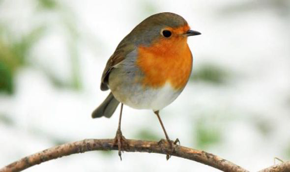

The gardener's friend. The UK's favourite bird - with its bright red breast the robin is familiar throughout
the year and especially at Christmas!
The Robin is a plump bird with bright orange-red breast, face, throat and cheeks edged
with grey, a white belly and olive-brown upper parts.
Males and females look identical, and young birds have no red breast and are spotted
with golden brown. Robins sing nearly all year round and despite their cute appearance,
they are aggressively territorial and are quick to drive away intruders. Male and females
both hold territories during winter.. They will sing at night next to street lights.
The Robin's diet is principally insects and worms, which it will normally catch by swooping, that is to say, snatching its prey on the ground after watching for movement from a perch above. They will also often follow a gardener that is digging the soil over for any easy pickings . They'll grab mealworms from a bird table or feeder, or snack on sunflower hearts. Fruit is another favourite. In the garden, the Robin has a sweet tooth and often takes cake, especially fruit cake, coconut cake and uncooked pastry.
Woodland, Farmland, Urban, and suburban
Robins live across the UK in woodland, hedgerows, parks and gardens.
The Robin can be seen all year-round.